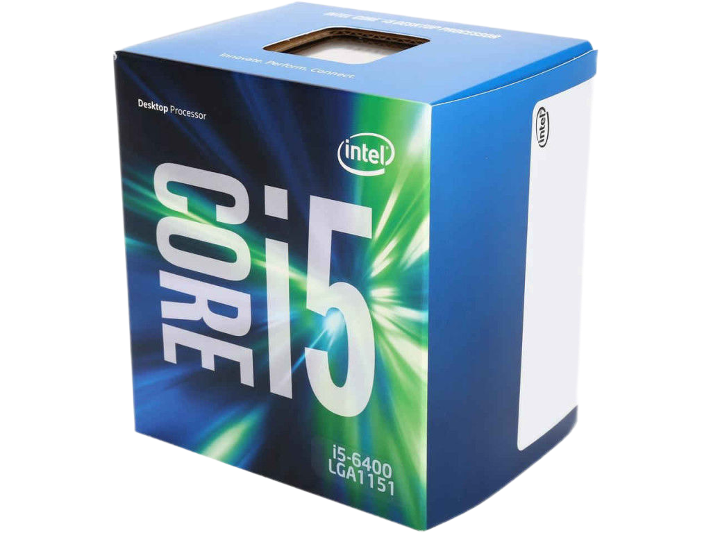

Главная страница > Intel Core i5-6400

Описание
Intel Core i3-9100F является лучшим выбором в категории "до 100$".
Тесты это доказали. Очевидно, что бежать в магазин за этим ЦП не стоит,
если в вашей системе уже "живет" равноценный камень прошлого поколения
(Core i3-7100, Core i3-8100 или Core i3-8350K). А вот тем, кто только планирует собрать добротный
игровой/мультимедийный ПК, советуем присмотреться именно к этой модификации.